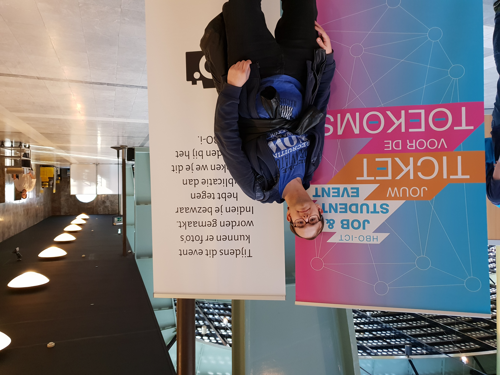
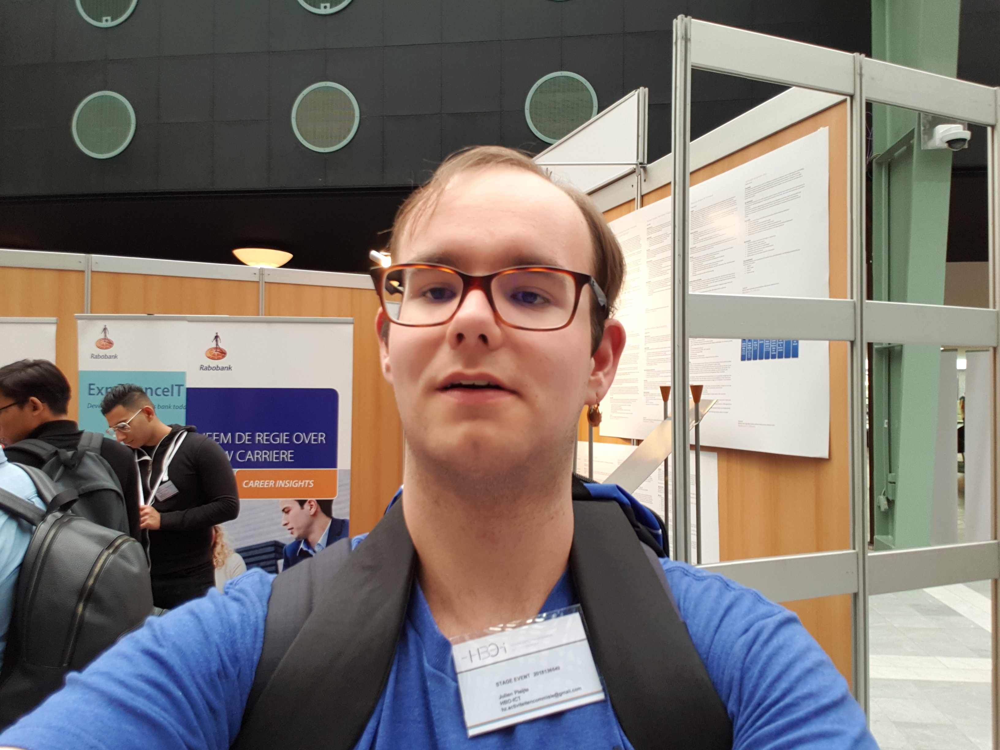
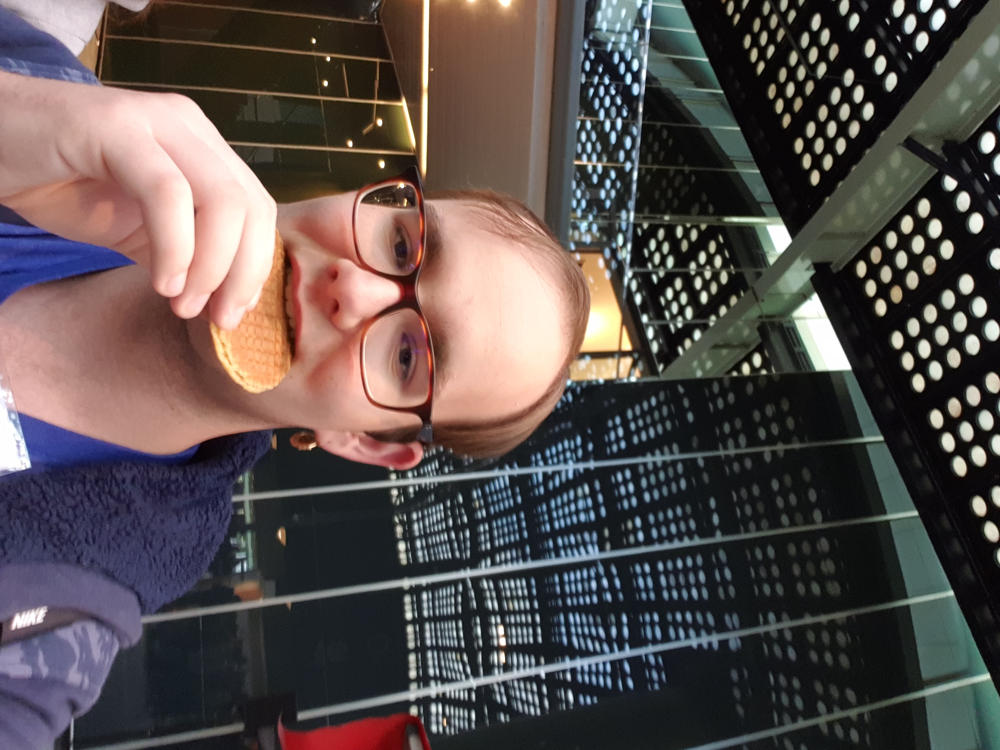
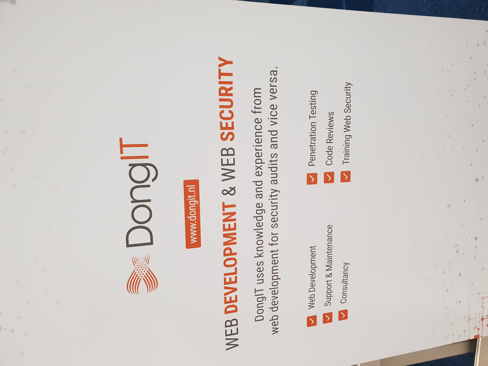
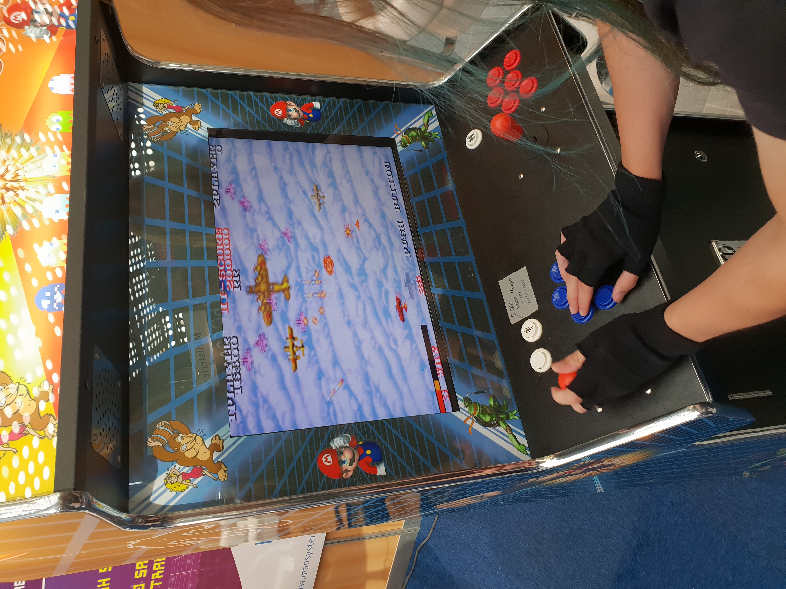
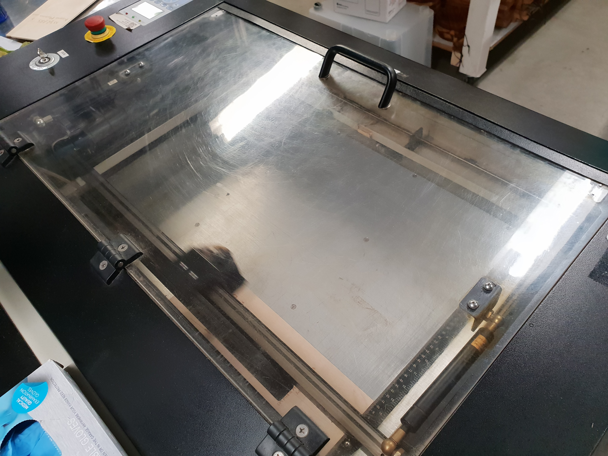
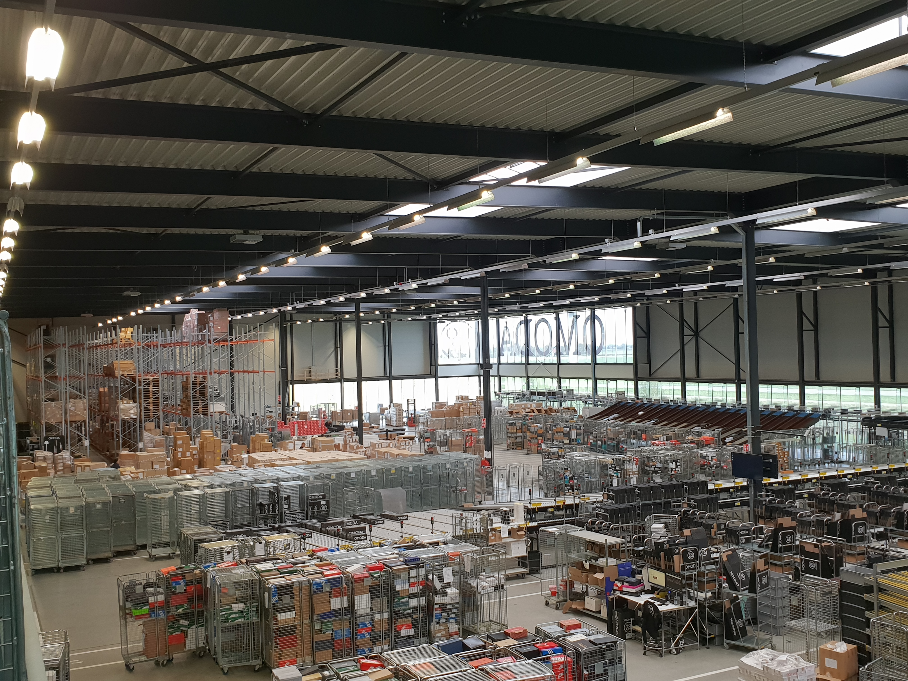

Op deze pagina zal ik mijn mening en data over het beroep van ICT'er uitwerken.
Selfie van mij bij de ingang van het HBO-I Job Event.
Als eerste zal ik beginnen met wat ik heb geleerd bij het HBO-I Job Event. Er waren verrassend veel verschillende soorten organisaties aanwezig. Het eerste voorbeeld is de Rabobank. De vertegenwoordiger heeft mij verteld over de verschillende posities die aanwezig waren zoals business analyst, operations engineer en etc. Verder heeft hij mij verteld over ITIL (Information Technology Infrastructure Library). Dit gebruiken zij om de beheersprocessen op te delen in logische groepen.
Selfie van mij bij de opstelling van de Rabobank
Naast de Rabobank waren er meerdere overheidsinstanties aanwezig zoals het CBS en de Ministerie van Defensie. Ik vond persoonlijk het CBS iets interessanter dan Defensie. In mijn gesprek met de CBS vertegenwoordiger kreeg ik te horen dat Data Scientist de meest gewilde positie is.
Tegen een vers gemaakte stroopwafel zeg ik geen nee.
Als volgende voorbeeld heb ik een, volgens mijn mening, hilarische genoemd bedrijf genaamd dongIT. De reden waarom ik de naam zo grappig vind is dat dit een bedrijf is dat pentesten (penetratie testen) uitvoert om de beveiling van websites en dergelijke te testen. Naast pentesten schrijven zij ook software met PHP.
Een zeer doordringend bedrijf
Hierna heb ik met het bedrijf chipSoft gesproken. ChipSoft is een bedrijf dat zich specialiseert in medische software. Zij zochten naar nieuwe software developers. Verder gebruiken zij de techniek van Scrummen. Dat is een techniek die men gebruikt waarbij de ontwikkelaars zelf bepalen wat ze doen en wanneer ze dat doen. Er wordt natuurlijk wel gekeken hoeveel en welke kwaliteit werk er wordt geleverd.
Als laatste heb ik met het bedrijf ETTU gesproken. Zij zochten naar AI enigneers. Hiernaast zei de vertegenwoordiger dat zij werken met blockchain technologie.
Even een kleine pauze nemen.
Hier zal ik een beoordeling geven van de bedrijven die we bezocht hebben tijdens de bedrijvensafari.
-
Colijn IT is een bedrijf dat software ontwikkelt voor de meubelindustrie. Dit bedrijf bestaat al lang en dat vind ik gerustellend.
-
Syntess is een bedrijf dat software voor allerlei bedrijven ontwikkelt. Zij maken gebruik van: Scrummen en Agile Development. Ik vind dit bedrijf er goed uitzien, maar ik vind het iets te formeel.
-
YourSuprise is een cadeauwebsite. Zij maken gebruik van: Big data, Databases, PHP, JS, Docker, A/B Testing en Business Intelligence. Het bedrijf is zeer informeel en dat vind ik goed, maar ik vind het net iets te informeel.
Geavanceerd spul hier.
-
Car Collect is een bedrijf dat een platform ontwikkelt voor bedrijven om op auto's te bieden. Ik vind dit bedrijf vooral leuk omdat het mogelijk als eerste Internet Explorer blockt, maar ik vind het bedrijf net iets te nieuw.
-
Omoda is een modebedrijf. Ik vind aan dit bedrijf weinig interessant, omdat het product mij weinig kan schelen en ik vind dat je weinig aan de techniek kan innoveren.

Dat zijn veel schoenen.
Mooi uitzicht hierboven.